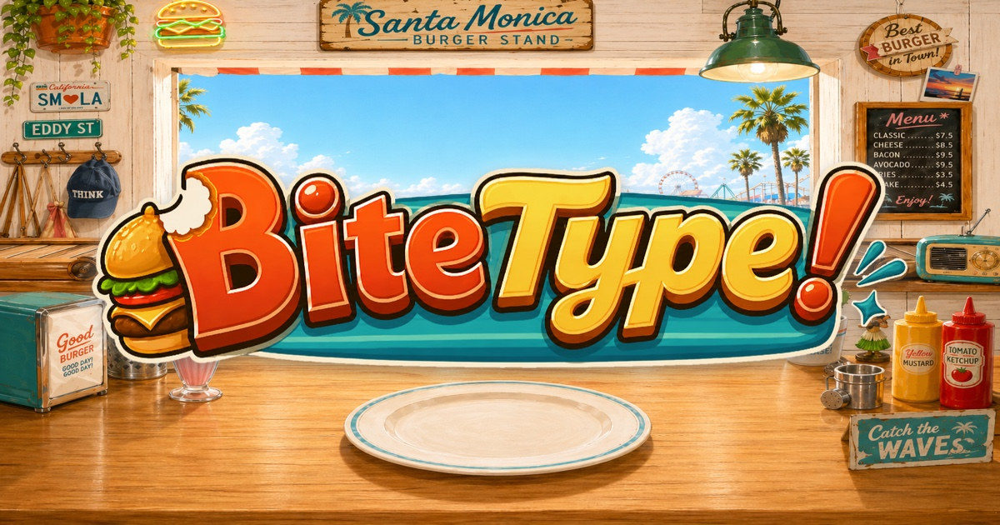
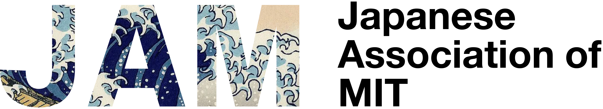

Inference and Fine-tuning
Studying adaptation and inference-time behavior in modern machine learning systems.
MIT EECS · LIDS · IDSS
山本かけい
PhD student in Computer Science at MIT, advised by Prof. Martin J. Wainwright. I work on inference, fine-tuning, generative models, machine learning theory, and optimization.
Research Assistant, Laboratory for Information & Decision Systems
Profile
I am a PhD student in Computer Science at MIT EECS and a research assistant at LIDS, advised by Martin J. Wainwright. I am also affiliated with IDSS.
My current research focuses on inference, fine-tuning, generative models, machine learning theory, and optimization, especially in settings involving distribution shift and model distillation.
Before MIT, I worked on deep learning theory at RIKEN AIP and studied Applied Mathematics and Computer Science at the University of Tokyo under Taiji Suzuki.
Questions I am currently drawn to.
Studying adaptation and inference-time behavior in modern machine learning systems.
Understanding when learning systems can recover from biased or misspecified supervision, especially in student-teacher estimation.
Analyzing Langevin dynamics, policy gradients, and distributional minimax optimization in regimes where feature learning matters.
Studying conditional diffusion models, classifier-free guidance, and the mathematical structure behind generative sampling.
Exploring timing-based learning and sparse-firing regularization for spiking neural networks and efficient inference.
2026
arXiv, 2026
Introduces Target-Induced Loss Tilting, a one-step covariate-shift adaptation method that decomposes the source predictor into a deployed predictor and a target-penalized auxiliary component, implicitly inducing relative importance weighting without estimating density ratios.
2026
arXiv, 2026
Proposes residual-as-teacher estimation to reduce teacher-bias propagation and proves excess-risk and convergence guarantees.
2024
ICML, 2024
Develops mean-field Langevin actor-critic methods for feature-learning policy optimization.
2024
ICLR, 2024
Extends mean-field Langevin dynamics to minimax optimization over probability distributions.
2024
IJCNN, 2024
Studies timing-based backpropagation beyond single-spike restrictions in spiking neural networks.
2023
Scientific Reports, 2023
Introduces spike-timing-based regularization methods to reduce firing frequency in TTFS-coded spiking neural networks.
Portfolio
 Calendar app · Since 2023
Calendar app · Since 2023
First built as a personal iPhone beta in 2023, then expanded for its first public release on iPhone and Android. One tap re-projects every event into another time zone.

Released web game · 2026Created and released a browser typing game set in a burger stand, plus a classroom mode for no-login school practice, teacher links, class results, and guided typing settings.

Community leadership · 2026Serving as JAM President. Led Hanami Festival as the representative organizer, planned Beneath the Great Wave from zero, and designed and built the JAM website.
Service
President · 2025-
Representative organizer for Hanami Festival 2026; originated and planned Beneath the Great Wave; built the organization website and programming infrastructure.
Creator and developer · 2026
Designed, implemented, and released the typing game and its classroom product, including gameplay, audio, analytics, teacher controls, and Cloudflare deployment.
Executive board member, General Affairs Director · 2022-2023
Served on the executive board of the University of Tokyo engineering student alumni/community organization.
President · 2020-2021
Led the student orchestra while playing trumpet.